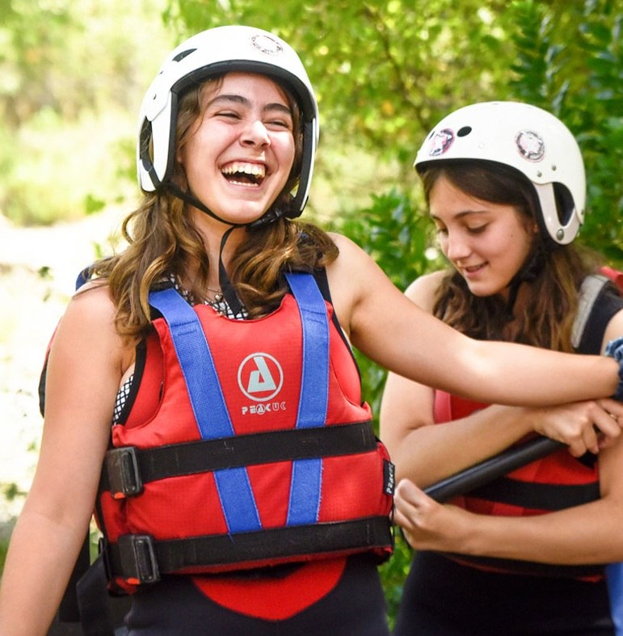

White Water Rafting exists to connect people with the excitement and beauty of nature through safe, unforgettable whitewater rafting adventures. Our mission is to deliver exceptional outdoor experiences guided by highly trained professionals who prioritize safety, teamwork, andenvironmental stewardship. We believe that every river has a story to tell, andevery journey is an opportunity to build confidence, create lasting memories, and inspire respect for the natural world. "Ride the Rapids. Embrace the Adventure," is our commitment to turning every trip into anexciting, meaningful, and life-enriching experience.